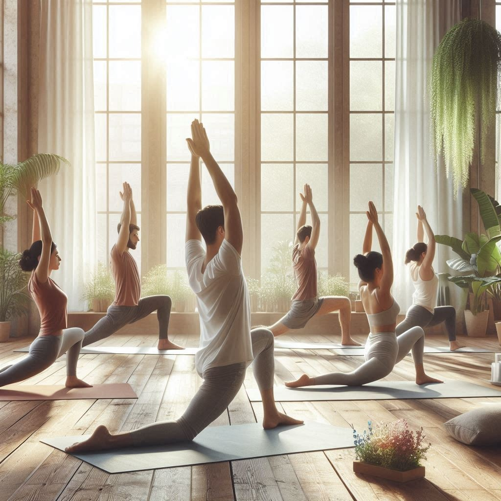
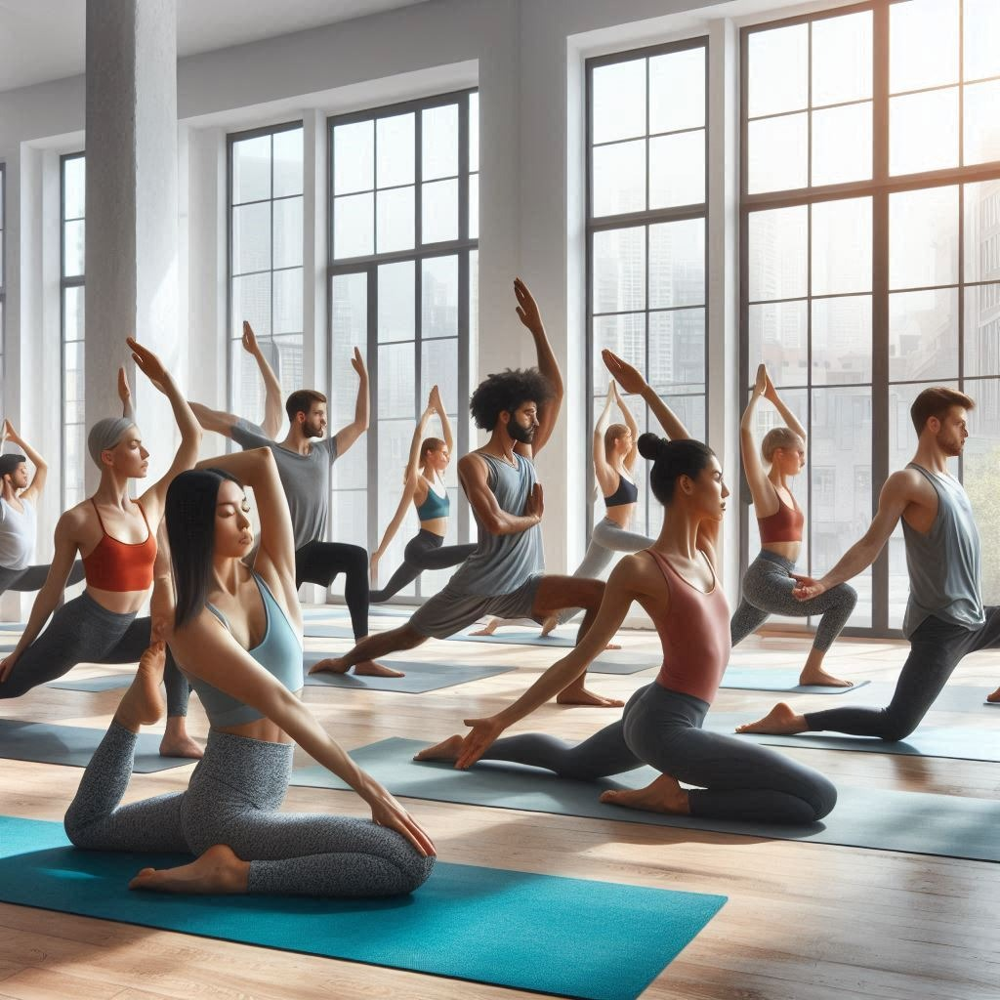
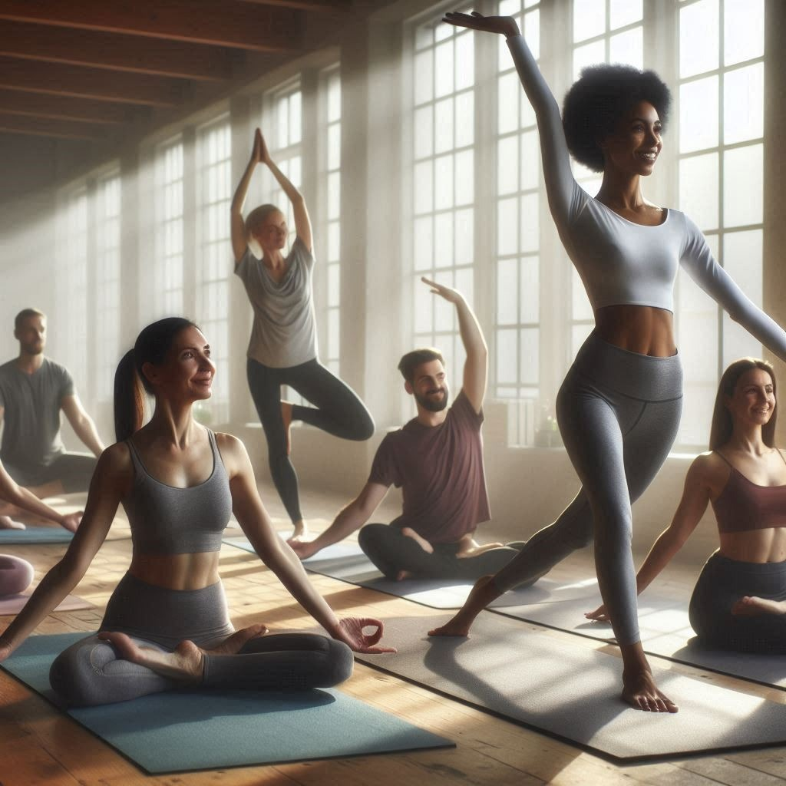
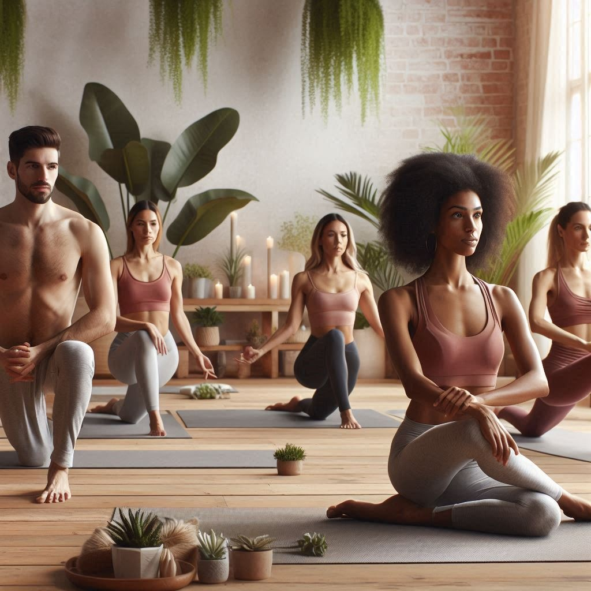
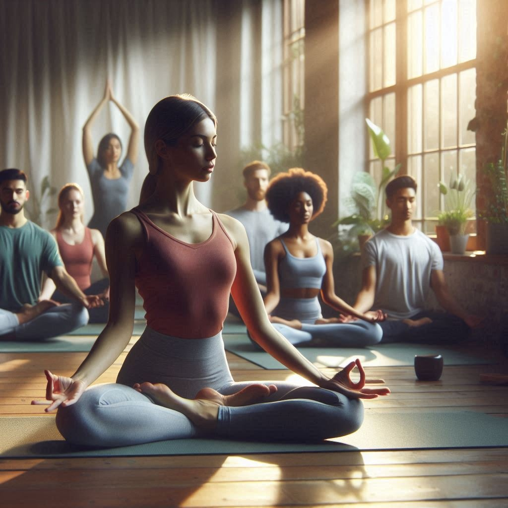

Yoga & Exercise

Asanas A Foundation of Yoga
Hatha Yoga is one of the oldest branches of
yoga
that focuses on physical postures (asanas),
breathing techniques (pranayama), and
meditation to balance the body and mind.
The word Hatha is derived from Sanskrit,
where “Ha” means sun and “Tha” meanmoon,
symbolizing the balance of energy in the
body.
Benefits of Hatha Asanas
Practicing Hatha asanas regularly can:
✔ Improve flexibility and strength
✔ Enhance posture and balance
✔ Reduce stress and anxiety
✔ Boost overall health and immunity
✔ Increase focus and mindfulness
.
Vinyasa Asanas – The Flowing Yoga
Vinyasa Yoga is a dynamic style of yoga
that synchronizes movement with breath.
The word Vinyasa comes from Sanskrit,
meaning “to place in a special way,”
referring to the smooth transition
between poses. Unlike Hatha Yoga, which
focuses on holding poses for a longer time,
Vinyasa is more fluid and energetic.
Key Features of Vinyasa Yoga
-Flow-Based Practice – Movements are linked
together in a continuous sequence.
-Breath-Synchronized Movements – Every
movement is guided by an inhale or exhale.
-Dynamic and Energetic – Helps build heat
in the body, improving circulation and
flexibility.-Variety in Practice – No fixed
sequence, allowing creativity in practice.
Benefits of Vinyasa Asanas
Enhances cardiovascular health
Improves flexibility and strength
Reduces stress and anxiety
Boosts mindfulness and focus
Aids in weight loss
Ashtanga Asanas – The Structured and Powerful
Practice Ashtanga Yoga is a disciplined and
structured form of yoga that follows a set
sequence of asanas combined with breath
control (pranayama) and focused gaze (drishti)
. The word Ashtanga comes from Sanskrit,
meaning "Eight Limbs", referring to the
eightfold path of yoga outlined by Maharishi
Patanjali.
Unlike Vinyasa Yoga, which is more flexible in
sequence, Ashtanga follows a fixed series of
poses that are practiced in a specific order,
making it a disciplined and physically
demanding style.
Key Features of Ashtanga Yoga
Traditional and Structured – Follows a set
series of postures.Dynamic and Physically
Intensive – Builds strength, flexibility,
and endurance.Breath-Synchronized Movements
– Uses Ujjayi breathing to control
breath and energy.
Benefits of Ashtanga Yoga
Improves flexibility, strength, and stamina
Enhances mental focus and discipline
Detoxifies the body through sweat and deep
breathing
Promotes weight loss and cardiovascular health
Develops mindfulness and inner awareness
Iyengar Asanas – Precision, Alignment,
and Stability Iyengar Yoga is a style
of yoga that emphasizes precision,
alignment, and the use of props to help
practitioners achieve perfect posture
in each asana. Founded by B.K.S. Iyengar,
this method is known for its attention
to detail and therapeutic benefits.
Unlike Ashtanga or Vinyasa yoga, which focus
on flow and intensity, Iyengar Yoga is slower
and more methodical, making it ideal for
people recovering from injuries, beginners,
or those looking to
refine their practice.
Benefits of Iyengar Yoga
Improves posture and body awareness
Enhances flexibility and strength gradually
reduces stress and calms the nervous system
Helps with rehabilitation and injury recovery
Develops balance and endurance
Bikram Asanas – The 26-Pose Hot Yoga Sequence
Bikram Yoga is a structured style of yoga
developed by Bikram Choudhury, consisting
of 26 asanas (postures) and 2 pranayama
(breathing exercises) performed in a
room heated to 105°F (40°C) with 40%
humidity. The heat helps to improve
flexibility, detoxify the body through
sweat, and enhance cardiovascular endurance.
Unlike Vinyasa or Ashtanga, which allow
variation, Bikram Yoga follows the same
90-minute sequence every time, making it
a disciplined and predictable practice.
Benefits of Bikram Yoga
Detoxifies the body through intense sweating
Improves flexibility and joint mobility
Boosts cardiovascular health and stamina
Increases lung capacity and breath control
Reduces stress and enhances mental focus
Kundalini Asanas – Awakening Inner Energy
Kundalini Yoga is a spiritual and physica
practice that focuses on awakening the
dormant Kundalini energy at the base of
the spine. This style of yoga, popularized
by Yogi Bhajan, combines dynamic asanas
(postures), pranayama (breathwork), mantra
chanting, and meditation to activate
energy flow through the chakras.
Unlike Hatha or Vinyasa Yoga, which focus
mainly on physical movement, Kundalini Yoga
is deeply spiritual and aims to elevate
consciousness
Benefits of Kundalini Yoga
Increases energy and vitality
Improves mental clarity and intuition
Strengthens the nervous system
Reduces stress and enhances emotional balance
Deepens spiritual awareness and mindfulness